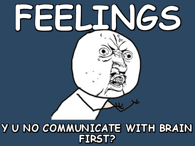

Feelings happen when you feel things
Joey S. - 6/28/14
A lot of my happiest moments have involved either friendship or family. Not to say that I cannot be happy without those two elements, but it just seems that most of my most memorable happy occasions have happened with family or friends.
In general, the values of friendship and family are two things that I find EXTREMELY important in my life. On a scale of 1-5, where five is I strongly try and live up to these values I am a 5. The value of family/friendship seems like something that you wouldn't really 'live up to' but I think I can relate this to the fact that I find these two elements really important in life.
Advice
I frequently get asked advice on technical issues from friends and family. These are often times questions like "how do I add a signature to my text messages". Yes, my dad asked me that a few weeks ago. I then had to explain to him that people will have him in their contacts so when he texts you, it shows its from him. It turned out he actually wanted a signature on his emails, he just wasn't aware of the difference.
Feel, feel, feel some more
I can honestly say that I am a really positive and up-beat person. This isn't one of those ways for me to mask my sadness or anything like that, I truly just feel happy quite often. A lot of times I am so upbeat that if I'm focused on something or a little quiet people tend to mistake that for me being sad or something being wrong. A lot of what happens in life is out of our control and everything else should not be controlled. Being the best possible version of yourself and trying to treat every thing and everyone with that attitude makes for a pretty happy life.